La guerre du Viêt Nam :
La guerre du Viêt Nam a vu ses débuts en 1955 mais elle se poursuit durant toutes les années 60 et jusqu’en 1975 et aurait fait entre 2 et 5 Millions de morts, cette guerre oppose alors les forces anti-communistes (Sud-Viêt Nam avec le soutien des USA et d’autres pays) et les forces communistes (Nord-Viêt Nam et Front national de libération du Sud Viêt Nam avec le soutien des khmers rouges et de l’URSS par exemple) La guerre américaine d'Indochine ne fut jamais déclarée. Aussi l'année exacte de son commencement prête-t-elle à débat. On a pris l'habitude d'en attribuer la paternité au président John F. Kennedy, qui à partir de 1961, y envoya plus de 15 000 conseillers militaires. Pourtant dès le milieu des années 1950, le Sud Viêt Nam connaît une situation insurrectionnelle.
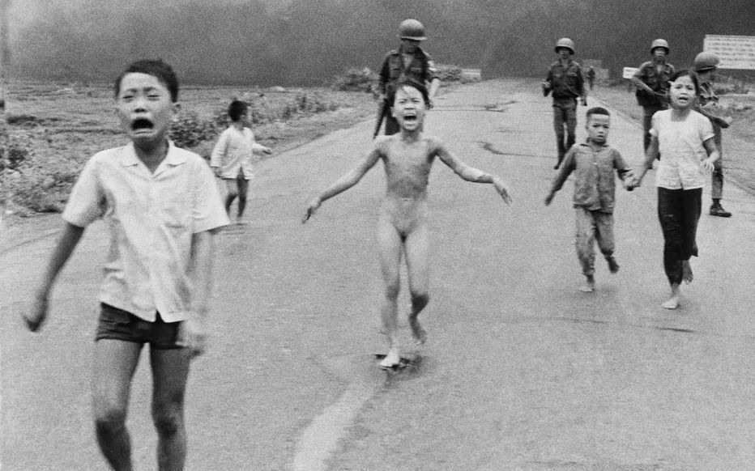 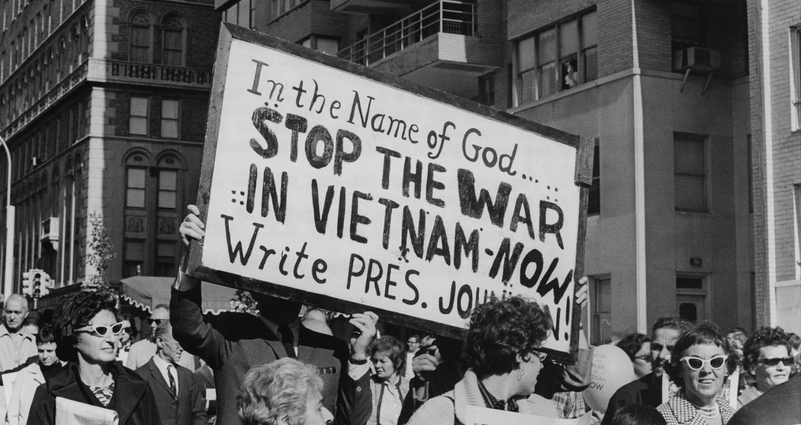 En 1998, le gouvernement fédéral des États-Unis détermine que les militaires américains tombés après le 1er novembre 1955 date de la création du premier groupe de conseillers militaires américains au Sud Viêt Nam peuvent être considérés comme morts durant la guerre du Viêt Nam. Ce n'est cependant qu'à partir de 1965 que les États-Unis interviennent massivement au Viêt Nam, après la résolution du golfe du Tonkin d'août 1964. La politique de contre-insurrection des États-Unis, accompagnée de bombardements massifs notamment l'opération Rolling Thunder contre le territoire nord-vietnamien échoue cependant à faire cesser la guérilla au Sud: l'offensive du Tết de 1968 confirme l'enlisement militaire du conflit vietnamien. Les opérations américaines contribuent au contraire à étendre les hostilités aux pays voisins : la guerre civile laotienne et la guerre civile cambodgienne deviennent des conflits annexes à la guerre du Viêt Nam.
La guerre d'Algérie
Débutée en 1954, se termine en 1965. La guerre et les massacres des harkis suivant le cessez-le-feu auraient fait au moins 400 000 morts, bien que les pertes algériennes soient difficiles à chiffrer.
La guerre d’Algérie ou révolution algérienne (en arabe : الثورة الجزائرية (Al-thawra Al-Jazaa'iriyya), en berbère : Tagrawla Tadzayrit) aussi connue comme la guerre d'indépendance algérienne ou guerre de libération nationale ou encore les événements d'Algérie, est un conflit armé qui s'est déroulé de 1954 à 1962 en Algérie, colonie française depuis 1830, divisée en départements depuis 1848. L'aboutissement est la reconnaissance de l'indépendance du territoire le 5 juillet 1962.
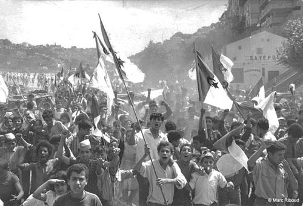
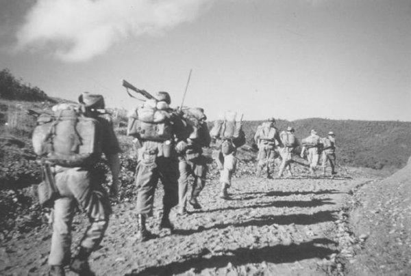
En tant que guerre d'indépendance et de décolonisation, elle oppose des nationalistes algériens, principalement réunis sous la bannière du Front de libération nationale (FLN), à la France. Elle est à la fois un double conflit militaire et diplomatique et aussi une double guerre civile, entre les communautés d'une part et à l'intérieur des communautés d'autre part. Elle a lieu principalement sur le territoire de l'Algérie française, avec également des répercussions en France métropolitaine.
Elle entraîne de graves crises politiques en France, avec pour conséquences le retour au pouvoir de Charles de Gaulle et la chute de la Quatrième République, remplacée par la Cinquième République. Après avoir donné du temps à l'armée française pour lutter contre l'Armée de libération nationale (ALN) en utilisant tous les moyens à sa disposition, De Gaulle penche finalement pour l'autodétermination en tant que seule issue possible au conflit, ce qui conduit une fraction de l'armée française à se rebeller et entrer en opposition ouverte avec le pouvoir, rapidement matée.
La guerre d'Algérie présente un bilan lourd et les méthodes employées durant la guerre par les deux camps (torture, répression de la population civile) furent controversées. Plus de 250 000 Algériens sont tués dans cette guerre, et jusqu'à 2 000 000 envoyés dans des camps de regroupements (sur une population de 10 000 000 de personnes). Près de 25 600 militaires français sont morts et 65 000 blessés. Les victimes civiles d'origine européenne dépassent les 10 000, dans 42 000 incidents violents enregistrés.
Le conflit débouche, après les accords d'Évian du 18 mars 1962, sur l'indépendance de l'Algérie le 3 juillet suivant, et précipite l'exode des habitants d'origine européenne, dits Pieds-Noirs et des Juifs, ainsi que le massacre de près de 50 000 harkis.
La guerre des Six Jours :
s'est déroulée du lundi 5 au samedi 10 juin 1967 et opposa Israël à l'Égypte, la Jordanie, la Syrie et le Liban.
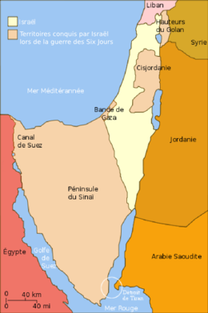
Cette guerre fut déclenchée comme une « attaque préventive » d'Israël contre ses voisins arabes, à la suite du blocus du détroit de Tiran aux navires israéliens par l'Égypte le 23 mai 1967 (les Israéliens avaient préalablement annoncé qu'ils considéreraient cet acte comme un casus belli). Le soir de la première journée de guerre, la moitié de l'aviation arabe était détruite ; le soir du sixième jour, les armées égyptiennes, syriennes et jordaniennes étaient défaites. Les chars de l'armée israélienne bousculèrent leurs adversaires sur tous les fronts. En moins d'une semaine, l'État hébreu tripla son emprise territoriale : l'Égypte perdit la bande de Gaza et la péninsule du Sinaï, la Syrie fut amputée du plateau du Golan et la Jordanie de la Cisjordanie et de Jérusalem-Est.
Plus symbolique encore que la défaite arabe fut la prise de la vieille ville de Jérusalem.
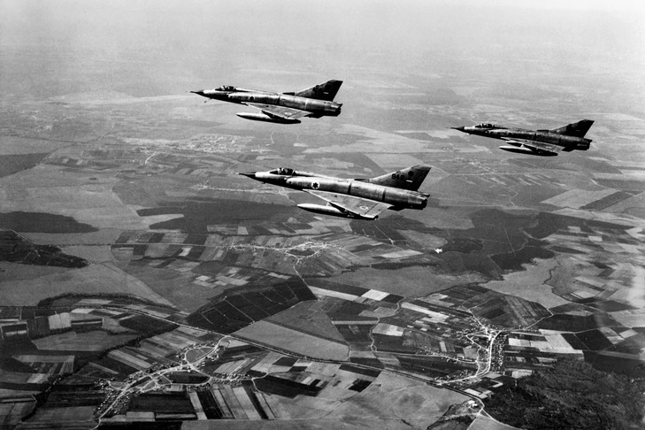
Les résultats de cette guerre, épisode du conflit israélo-arabe, influencent encore aujourd'hui la géopolitique de la région. Si Israël s'est depuis retiré de certains territoires annexés, le Sinaï et la bande de Gaza, d'autres ont été annexés : le plateau du Golan et Jérusalem-Est (un acte non reconnu par la communauté internationale) et une partie de la Cisjordanie est toujours occupée.
La guerre du Biafra
La guerre du Biafra est une guerre civile au Nigeria qui s'est déroulée du 6 juillet 1967 au 15 janvier 1970 et a été déclenchée par la sécession de la région orientale du Nigeria, qui s'auto-proclame République du Biafra sous la direction du colonel Ojukwu. Le blocus terrestre et maritime du Biafra par les troupes gouvernementales provoque, dans la région, une famine qui aurait entraîné la mort d'un à deux millions de personnes.
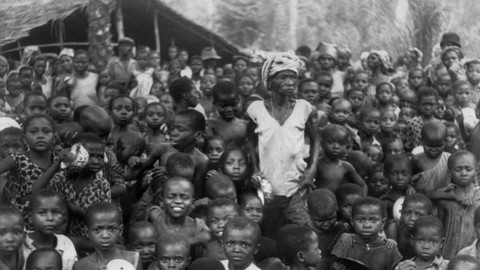 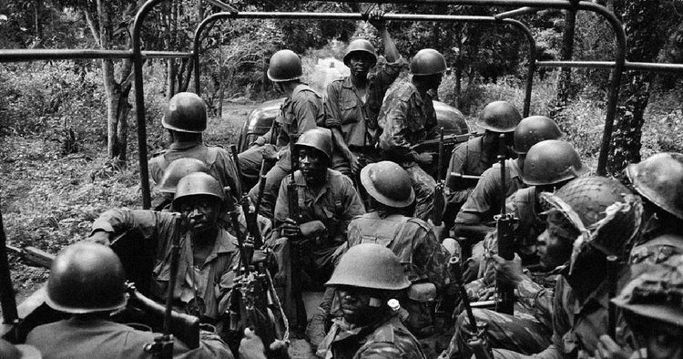 Cette guerre est largement couverte par les médias étrangers, d'autant que le photojournalisme est en plein essor et expose aux populations occidentales le dénuement du tiers monde. Une des conséquences de cette guerre sera l'évolution de la doctrine de l'aide humanitaire qui prônera la médiatisation intense du conflit et une ingérence directe pour venir en aide aux réfugiés, couronnée par la fondation de l'ONG Médecins sans frontières en 1971.
Traité d'interdiction partielle des essais nucléaires (1963)
Le traité d'interdiction partielle des essais nucléaires, signé le 5 août 1963 à Moscou peu de temps après la crise de Cuba (début de la Détente), porte sur l'interdiction des essais d'armes nucléaires dans l'atmosphère, dans l'espace extra-atmosphérique et sous l'eau. Les essais souterrains ne sont pas compris dans l'interdiction, à la condition qu'ils n'entraînent pas la présence de déchets radioactifs hors des limites territoriales de l'État qui a procédé aux essais. Ce traité est précédé d'un moratoire observé par la Grande-Bretagne, l'URSS et les États-Unis depuis novembre 1958 puis d'un premier traité en 1960.
Le but du premier du traité était avant tout d'empêcher les états non-nucléaires d'acquérir l'arme, sans restriction pour les états la possédant déjà, notamment la France et la Chine, qui le récusèrent vivement. En tablant sur un argument écologique (afin d'éviter la radioactivité), les deux superpuissances espéraient également s'attirer le soutien du tiers-monde.
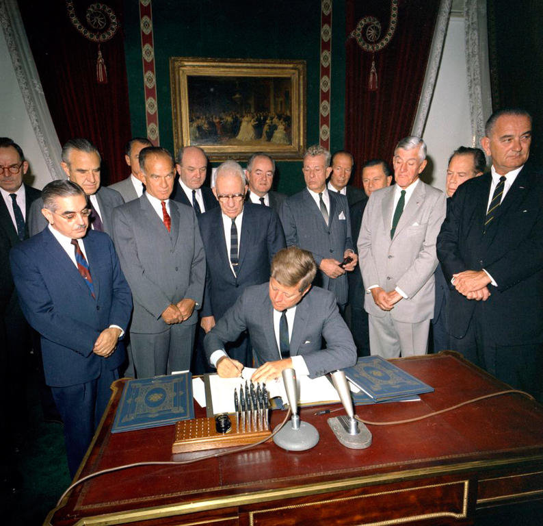
En juillet 1963, l'URSS donne son accord pour signer avec les États-Unis et la Grande-Bretagne le traité, condamnant les efforts de la Chine pour développer la bombe et devenant l'un des ennemis de la Chine qui se définit alors comme le seul pays détenant la vérité du communisme et qualifiant les autres de révisionnistes
Décolonisation de l'Afrique (1960-1968)
Durant le partage de l'Afrique à la fin du xixe siècle, les puissances européennes ont divisé l'Afrique et ses ressources en zones politiques à la Conférence de Berlin de 1884-85.
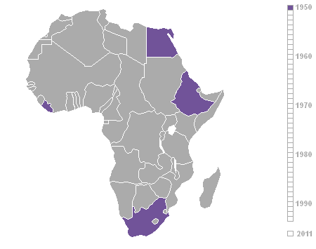
En 1905, le territoire africain est complètement approprié par les nations européennes, à l'exception du Liberia et de l'Abyssinie. La Grande-Bretagne et la France ont les plus grandes possessions, mais le Portugal, l'Allemagne, l'Espagne, l'Italie et la Belgique sont également plus ou moins largement propriétaires de portions du territoire africain. L'Afrique a d'un côté souffert, à court et à long terme, des effets de la colonisation et de l'impérialisme, avec l'exploitation de ses ressources naturelles comme l'or et le diamant et de sa main-d'œuvre, le bouleversement économique, social et culturel, une division géopolitique et un assujettissement politique. D'autre côté, le transfert d'éléments de la civilisation européenne et la constitution d'unités politiques plus larges a ouvert de nouvelles perspectives.
Causes :
Sur le plan africain, la Seconde Guerre mondiale a vu les colonies venir en aide à leurs colonisateurs dans le processus de guerre, mais sans mention de l'indépendance pour les nations africaines. Le dominion de Union sud-africaine dirigée par Jan Smuts est entré en guerre aux côtés des Alliés, s'est engagé en Égypte et à Madagascar et a participé à la libération de l'Éthiopie. La plupart des gouverneurs coloniaux français ont montré leur loyauté au régime de Vichy jusqu'en 1943. La propagande allemande durant la guerre n'est pas étrangère à cette méfiance envers l'autorité britannique. Du fait que la conquête impériale japonaise ait commencé en Extrême-Orient, elle a fait face à une insuffisance en matière première telle que le caoutchouc et divers minerais. L'Afrique était alors forcée de compenser cette pénurie et a beaucoup bénéficié de ce changement. Un autre problème clé auquel les Européens ont dû faire face était la présence d'U-boots (sous-marins allemands) qui patrouillaient dans l'océan Atlantique. Ceci a réduit la quantité de matières premières transportées vers l'Europe et a poussé à la création d'industries locales en Afrique. Ces industries ont, à leur tour, causé l'agrandissement et la création de nouveaux quartiers. Avec l'accroissement des zones urbaines et de l'industrie est venue celle des syndicats. En plus des syndicats, l'urbanisation a encouragé la lecture et l'écriture, qui ont favorisé la naissance de journaux pro-indépendance.
Durant les années 1930, certaines élites, formées dans les universités occidentales et familières avec des idées comme l'autodétermination voient émerger des leaders, dont quelques nationalistes majeurs comme Jomo Kenyatta (Kenya), Kwame Nkrumah (Côte-de-l'Or, Ghana), Léopold Sédar Senghor (Sénégal) et Félix Houphouët-Boigny (Côte d'Ivoire), ont mené la bataille pour l'indépendance.
Depuis la Première Guerre mondiale, la position des États-Unis est devenue déterminante sur le plan international. D'une manière générale, ceux-ci avaient intérêt au démantèlement des empires coloniaux britanniques et français qui leur interdisaient le marché des territoires sous domination européenne. Avec le déclenchement de la Seconde Guerre mondaile, Franklin Roosevelt jugeait de surcroît, que la défaite de la France et la collaboration du gouvernement de Vichy avec l'Allemagne ôtait à celle-ci toute autorité politique pour conserver son empire colonial. Il donne ainsi avec Cordell Hull dès 1942, une impulsion sans précédent au mouvement de décolonisation.
En 1941, Roosevelt et Churchill se rencontrent pour discuter du monde de l'après guerre. Il en résulte la Charte de l'Atlantique. L'une des clauses de ce document, introduite par Roosevelt, était l'autonomie des colonies impériales. Après la seconde guerre mondiale il y avait donc une pression sur les britanniques de se conformer aux termes de la Charte de l'Atlantique. Lorsque Churchill a introduit la charte au parlement, il a expressément transposé les colonies en pays récemment conquis à l'Allemagne pour pouvoir la faire passer. Après la guerre, les colonies africaines étant toujours considérées « infantiles » et « immatures », des gouvernements démocratiques n'ont été introduit qu'à l'échelle locale. Les derniers mois de sa vie, Roosevelt est contraint, du fait de considérations de sécurité militaire, de modérer son anticolonialisme. La diplomatie américaine prend un cours plus pragmatique visant à rassurer ses partenaires occidentaux durant la guerre froide.
La construction du mur de berlin (1961)
Le mur de Berlin (en allemand Berliner Mauer), « mur de la honte » pour les Allemands de l'Ouest et officiellement appelé par le gouvernement est-allemand « mur de protection antifasciste », est érigé en plein Berlin dans la nuit du 12 au 13 août 1961 par la République démocratique allemande (RDA), qui tente ainsi de mettre fin à l'exode croissant de ses habitants vers la République fédérale d'Allemagne (RFA)
Le mur, composante de la frontière intérieure allemande, sépare physiquement la ville en Berlin-Est et Berlin-Ouest pendant plus de vingt-huit ans, et constitue le symbole le plus marquant d'une Europe divisée par le rideau de fer. Plus qu'un simple mur, il s'agit d'un dispositif militaire complexe comportant deux murs de 3,6 mètres de haut, avec un chemin de ronde, 302 miradors et dispositifs d'alarme, 14 000 gardes, 600 chiens et des barbelés dressés vers le ciel. Un nombre indéterminé de personnes furent victimes des tentatives de franchissement du mur. En effet, des gardes-frontière est-allemands et des soldats soviétiques n'hésitèrent pas à tirer sur des fugitifs.
 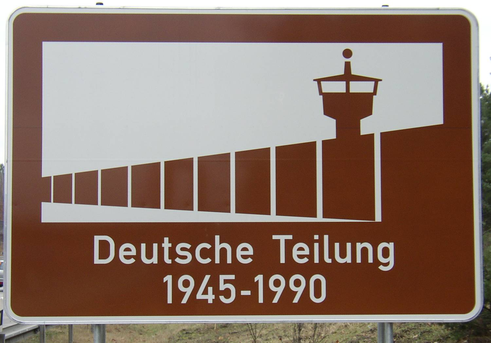
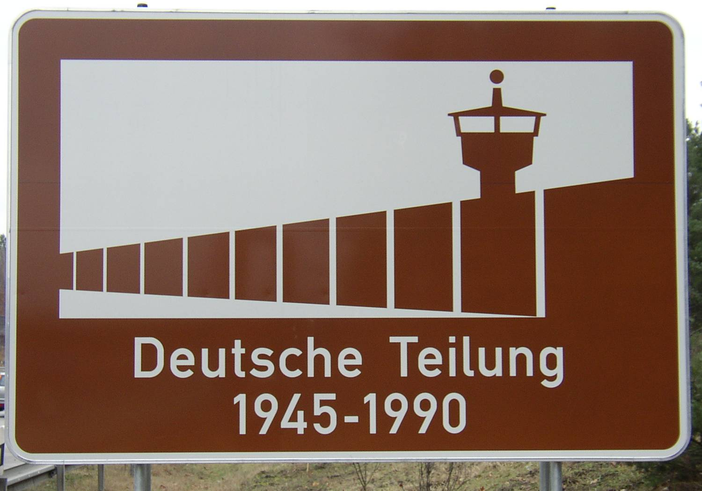
L'affaiblissement de l'Union soviétique, la perestroïka conduite par Mikhaïl Gorbatchev, et la détermination des Allemands de l'Est qui organisent de grandes manifestations, provoquent le 9 novembre 1989 la chute du mur de Berlin, suscitant l'admiration incrédule du « Monde libre » et ouvrant la voie à la réunification allemande. Presque totalement détruit, le Mur laisse cependant dans l'organisation urbaine de la capitale allemande des cicatrices qui ne sont toujours pas effacées aujourd'hui. Le mur de Berlin, symbole du clivage idéologique et politique de la guerre froide, a inspiré de nombreux livres et films. Plusieurs musées lui sont consacrés.
Mai 68
Les événements de mai-juin 1968, ou plus brièvement Mai 68, désignent une période durant laquelle se déroulent, en France, des manifestations d'étudiants, ainsi que des grèves générales et sauvages.
Ces événements, enclenchés par une révolte de la jeunesse étudiante à Paris, puis gagnant le monde ouvrier et la plupart des catégories de population sur l'ensemble du territoire, constituent le plus important mouvement social de l'histoire de France du xxe siècle.
Il est caractérisé par une vaste révolte spontanée antiautoritaire (« ici et maintenant »), de nature à la fois sociale, politique et culturelle, dirigée contre le capitalisme, le consumérisme, l'impérialisme américain et, plus immédiatement, contre le pouvoir gaulliste en place.
Les événements de mai-juin provoquent la mort d'au moins sept personnes1 et des centaines de blessés graves dans les affrontements, aussi bien du côté des manifestants que des forces de l'ordre.
Avec le recul des années, les événements de mai-juin 1968 apparaissent comme une rupture fondamentale dans l'histoire de la société française, matérialisant une remise en cause des institutions traditionnelles.
Assassinat John Fitzgerald Kennedy
John Fitzgerald Kennedy dit Jack Kennedy, communément appelé John Kennedy et par ses initiales JFK, né le 29 mai 1917 à Brookline (Massachusetts) et mort assassiné le 22 novembre 1963 à Dallas (Texas), est un homme d'État américain, 35e président des États-Unis. Entré en poste le 20 janvier 1961, il est, à 43 ans, le plus jeune président élu des États-Unis, et également le plus jeune président à mourir, moins de trois ans après son entrée à la Maison-Blanche, à l'âge de 46 ans.
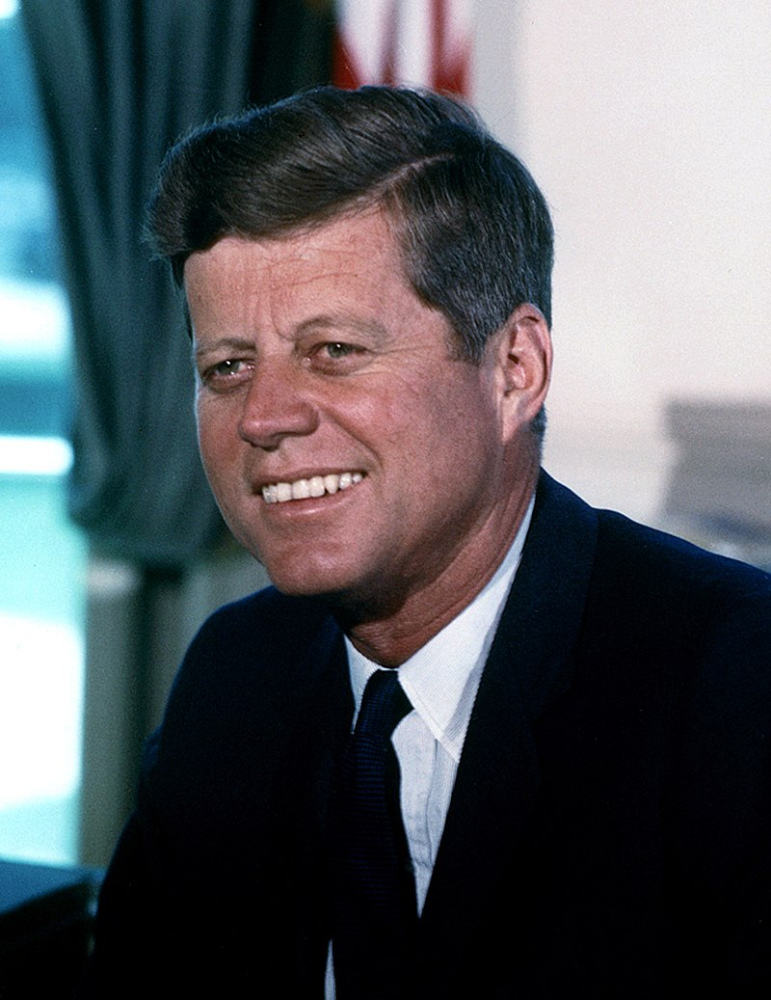
Il laisse son empreinte dans l'histoire des États-Unis par sa gestion de la crise des missiles de Cuba, son autorisation du débarquement de la baie des Cochons, son engagement pour le traité d'interdiction partielle des essais nucléaires, le programme Apollo dans le cadre de la course à l'espace, son opposition à la construction du mur de Berlin, sa politique d'égalité des genres et son assassinat. Ses prises de position en faveur de l'accord général sur les tarifs douaniers et le commerce lui valent d'être respecté jusque chez les républicains, et le mouvement afro-américain des droits civiques — qu'il soutient, voulant mieux intégrer les minorités dans la société — qui prend place durant sa présidence annonce la déségrégation ; dans un même temps, il est admiré par les dirigeants étrangers pour l'aide qu'il fournit aux pays en développement au travers de l'Alliance pour le Progrès et des Corps de la paix. Son programme, basé sur le slogan « Nouvelle Frontière », de stimulation de l'économie, de lutte contre la pauvreté et de magnification de l'Amérique par l'innovation, est également réutilisé par les démocrates après sa mort en son honneur.
Les circonstances de son assassinat par Lee Harvey Oswald, seul coupable reconnu, ont donné lieu à de nombreuses enquêtes, ouvrages écrits et filmés, interprétations et théories du complot au fil des décennies ayant suivi son assassinat.
Assassinat Martin Luther King Jr.
Martin Luther King Jr., né à Atlanta (Géorgie) le 15 janvier 1929 et mort assassiné le 4 avril 1968 à Memphis (Tennessee), est un pasteur baptiste afro-américain, militant non-violent pour le mouvement des droits civiques aux États-Unis des Noirs américains, pour la paix et contre la pauvreté.
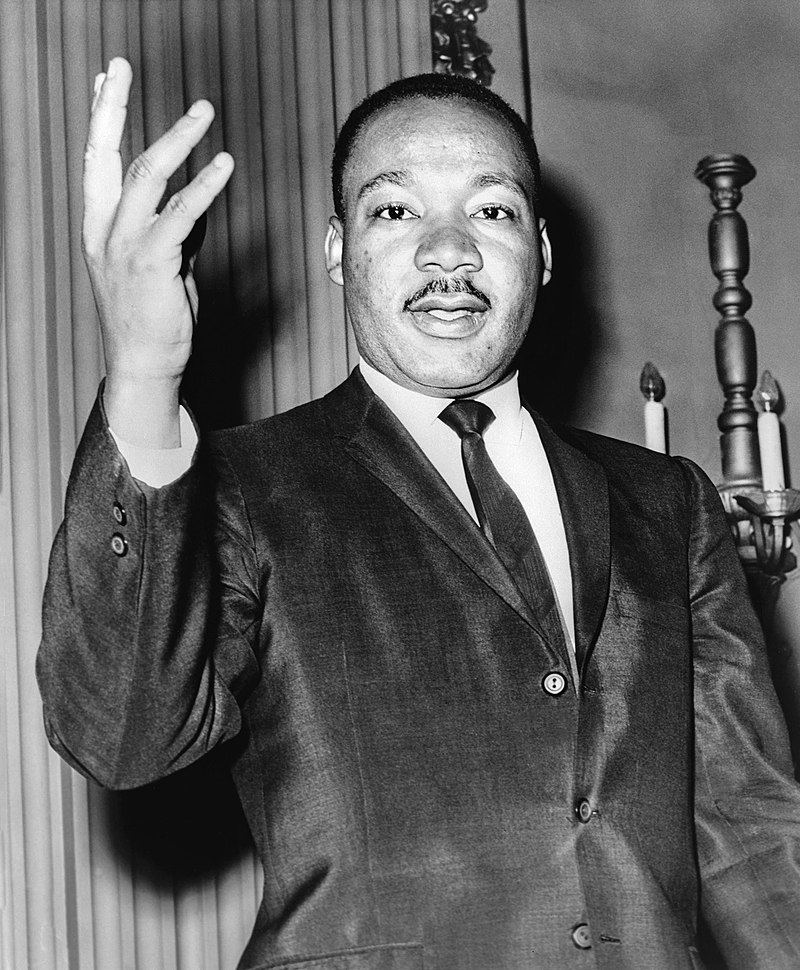
Il organise et dirige des actions telles que le boycott des bus de Montgomery pour défendre le droit de vote, la déségrégation et l'emploi des minorités ethniques. Il prononce un discours célèbre le 28 août 1963 devant le Lincoln Memorial à Washington durant la marche pour l'emploi et la liberté : « I have a dream ». Il est soutenu par John Kennedy dans la lutte contre la ségrégation raciale aux États-Unis ; la plupart de ces droits seront promus par le Civil Rights Act et le Voting Rights Act sous la présidence de Lyndon B. Johnson.
Martin Luther King devient le plus jeune lauréat du prix Nobel de la paix en 1964 pour sa lutte non-violente contre la ségrégation raciale et pour la paix. Il commence alors une campagne contre la guerre du Viêt Nam et la pauvreté, qui prend fin en 1968 avec son assassinat officiellement attribué à James Earl Ray, dont la culpabilité et la participation à un complot sont toujours débattues.
Il se voit décerner à titre posthume la médaille présidentielle de la Liberté par Jimmy Carter en 1977, le prix des droits de l'homme des Nations unies en 1978, la médaille d'or du Congrès en 2004, et est considéré comme l'un des plus grands orateurs américains1. Depuis 1986, le Martin Luther King Day est un jour férié aux États-Unis.
Le concorde
Le Concorde était un avion de ligne supersonique construit par l'association de Sud-Aviation (devenue par la suite Aérospatiale) et de la BAC (devenue ensuite British Aerospace).
Sa vitesse de croisière était de Mach 2,02 à une altitude variant de 16 000 à 18 000 mètres, soit environ 2 145 km/h. Il était doté d'une aile delta, dite « gothique », et de turboréacteurs à postcombustion développés d'abord pour le bombardier britannique Avro Vulcan. Il fut aussi le premier avion civil à être équipé de commandes de vol électriques analogiques.
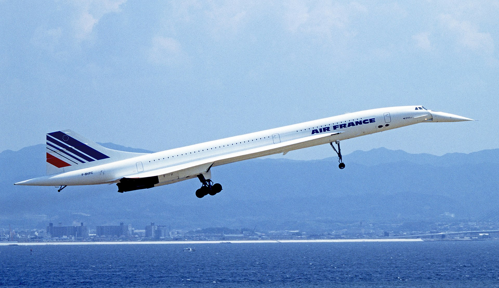
Les vols commerciaux commencèrent en 1976 et prirent fin 27 ans plus tard, en 2003. La forte consommation de carburant de l'appareil avait rendu son exploitation déficitaire. Son déclin fut précipité par l'accident du vol 4590 d'Air France en juillet 2000, unique accident majeur d'un Concorde, qui entraîna la mort de 113 personnes.
Confiné à des liaisons survolant principalement les mers et océans, à cause du bang supersonique, peu apprécié des populations des villes et villages survolés et exploité par deux compagnies seulement, l'appareil ne fut produit qu'à vingt exemplaires, dont six non commerciaux pour essais et mise au point. Cependant, il fut l'un des moteurs importants du développement technologique et stratégique européen, il eut en plus un fort impact culturel. Avec le Tupolev Tu-144 (lequel n'a transporté de passagers que durant quelques mois), il fut le seul avion supersonique de transport de voyageurs à avoir été exploité pendant une assez longue période.
Apollo 11
Apollo 11 est une mission du programme spatial américain Apollo au cours de laquelle, pour la première fois, des hommes marchent sur la Lune, le 21 juillet 1969, à 2 h 56 UTC (dimanche 20 juillet 1969 21 h 56 à Houston, lundi 21 juillet 1969 3 h 56 UTC+1 en France). L'agence spatiale américaine, la NASA, remplit ainsi l'objectif fixé par le président John F. Kennedy en 1961 de poser un équipage sain et sauf sur la Lune avant la fin des années 1960 dans le but de démontrer la supériorité des États-Unis sur l'Union soviétique mise à mal par les succès soviétiques au début de l'ère spatiale dans le contexte de la guerre froide qui oppose ces deux pays. Ce défi est lancé alors que la NASA n'a pas encore placé en orbite un seul astronaute. Le projet aboutit grâce à une mobilisation de moyens humains et financiers considérables, ce qui permet à l'agence spatiale de rattraper son retard sur le programme spatial soviétique, puis de dépasser celui-ci.
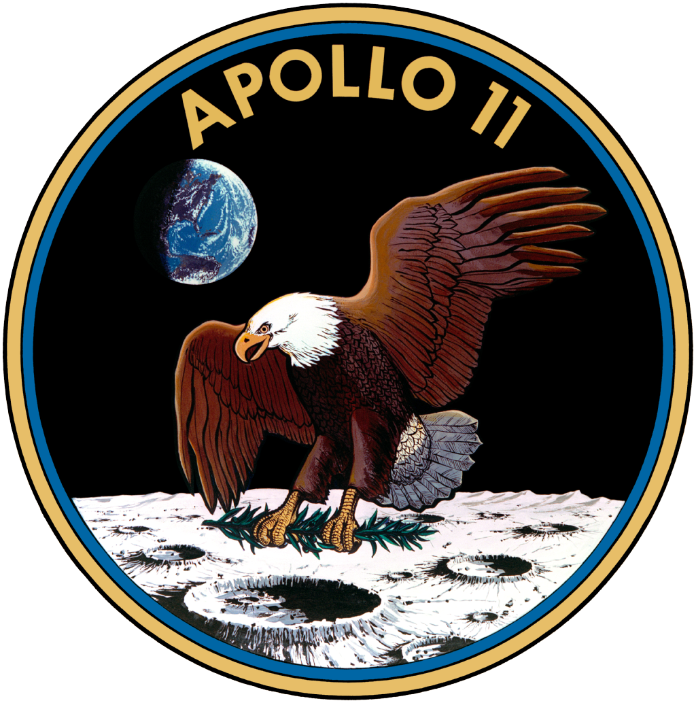
Apollo 11 est l'aboutissement d'une série de missions qui permettent la mise au point des techniques spatiales nécessaires, des vaisseaux spatiaux et d'un lanceur géant ainsi que la reconnaissance des sites d'atterrissage sur la Lune. C'est la troisième mission habitée à s'approcher de la Lune, après Apollo 8 et Apollo 10, et la cinquième mission avec équipage du programme Apollo. Le vaisseau spatial emportant l'équipage est lancé depuis le centre spatial Kennedy le 16 juillet 1969 par la fusée géante Saturn V développée pour ce programme. Elle emporte un équipage composé de Neil Armstrong, commandant de la mission et pilote du module lunaire, de Buzz Aldrin, qui accompagne Armstrong sur le sol lunaire, et de Michael Collins, pilote du module de commande et de service qui restera en orbite lunaire. Armstrong et Aldrin, après un alunissage comportant quelques péripéties, séjournent 21 heures et 36 minutes à la surface de la Lune et effectuent une sortie extravéhiculaire unique d'une durée de 2 heures et 31 minutes.
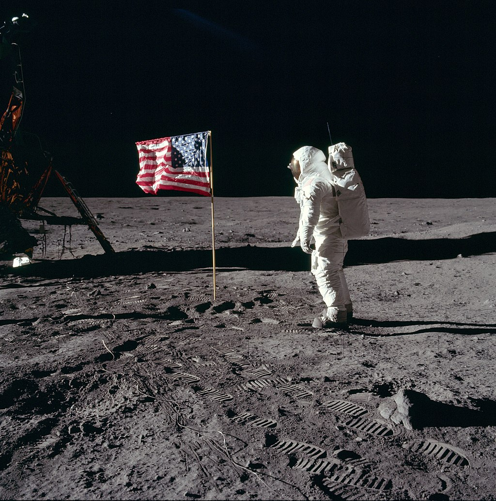
Après avoir redécollé et réalisé un rendez-vous en orbite lunaire avec le module de commande et de service, le vaisseau Apollo reprend le chemin de la Terre et amerrit sans incident dans l'océan Pacifique à l'issue d'un vol qui aura duré 8 jours, 3 heures et 18 minutes.
Au cours de cette mission, 21,7 kilogrammes de roche et de sol lunaire sont collectés et plusieurs instruments scientifiques sont installés sur la surface de notre satellite. Bien que l'objectif scientifique d'Apollo 11 ait été limité par la durée du séjour sur la Lune et la capacité d'emport réduite des vaisseaux spatiaux utilisés, la mission fournit des résultats substantiels. Son déroulement, en particulier les premiers pas sur la Lune filmés par une caméra vidéo et retransmis en direct, constituent un événement suivi sur toute la planète en mondovision par des centaines de millions de personnes.
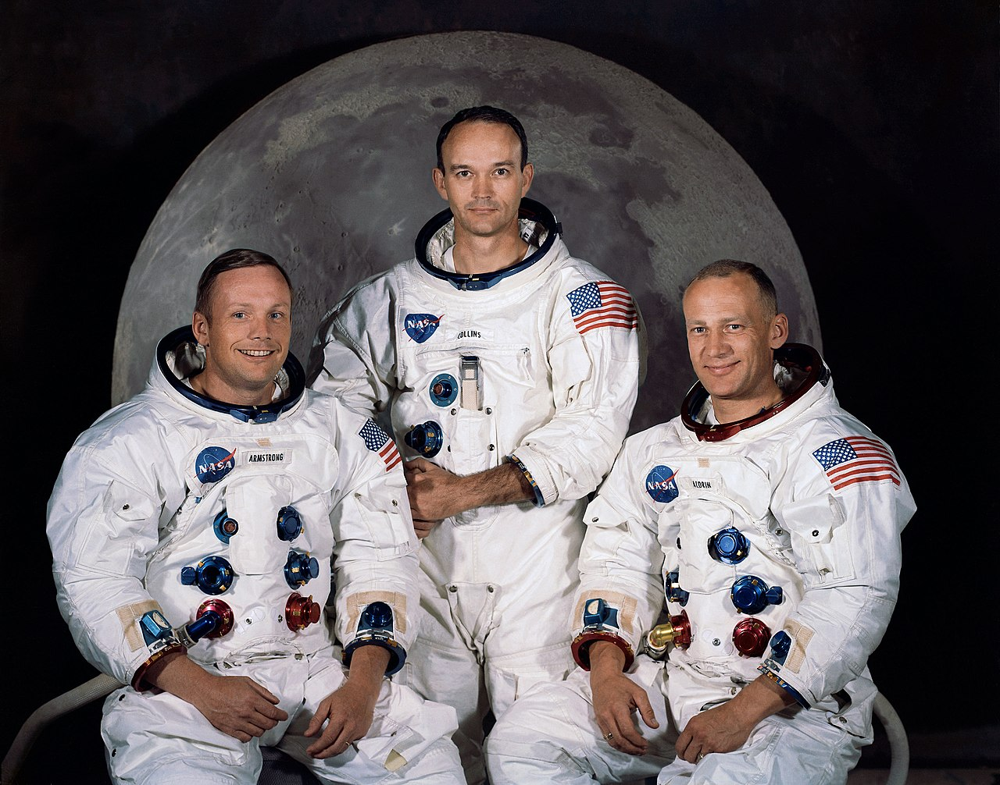